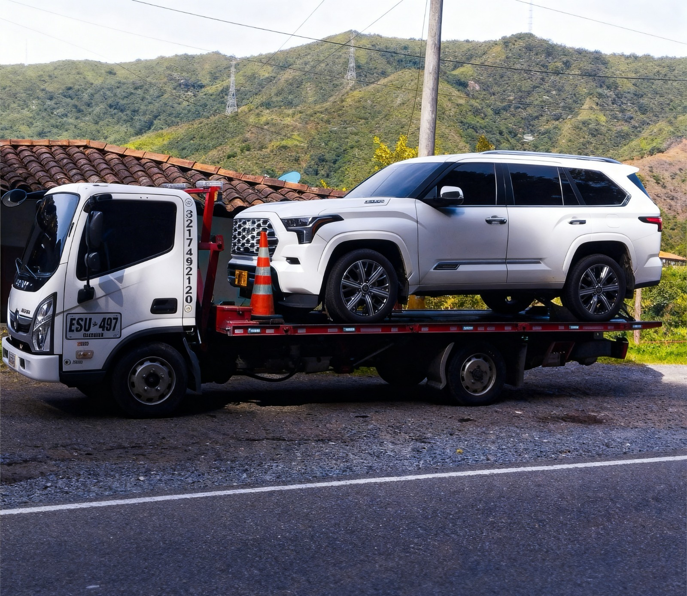

Expertos en el transporte de motos en Pereira y el Eje Cafetero.
Solicitar Grúa MotoSabemos que tu moto no es solo un vehículo, es tu pasión. En **VehiGruas** utilizamos equipo especializado para asegurar que tu moto llegue intacta a su destino.

Una grúa convencional sin el equipo adecuado puede rayar el chasis, dañar las suspensiones o romper los espejos de tu moto. En VehiGruas garantizamos un servicio libre de riesgos.
Hablar por WhatsApp →